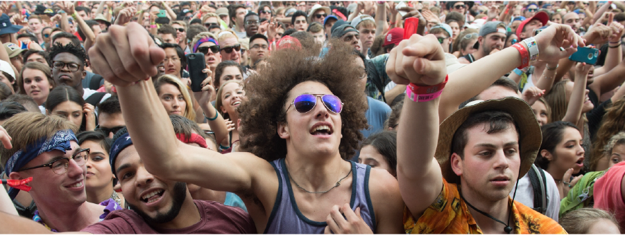

Going with a group to your first festival?

1
FIGURE OUT A MEETING PLACE
When you get in to the venue and have a map, find a monument or sculpture to set up as a meeting place at certain times throughout the night to meet up. Setting a meeting place helps you find each other easier without the need for cell service while in the venue.
2
DON't rely on phone service
Cell service in the venue is going to be completely terrible, don't rely on this as an effective tool to communicate with your group. Put your phone in airplane mode to save on battery life to last throughout the day/night that way if you can't find your friends after it's over you still have battery life left to call them outside of the venue.
3
MAKE a chain when walking through the crowd
When walking through crowds together make sure to lock hands with the person in front of you and behind you that way you don't lose each other on the way. This will help you all get to the dj you want to see together easily and be able to experience them together.
4
look after each other. don't get dehydrated!
Make sure that if you have anyone in your group that either has brought or bought something to hold water in to ask if they need a drink periodically. Nothing is worse than having a member of your group pass out from dehydration. Try to make sure everyone is okay on water throughout the day and plan to refill between dj sets!
5
if you can't find your friends, enjoy the music!
You are there at the festival first and foremost to listen to your favorite dj's. If you can't find your friends then just make your way or stay where you are to enjoy the music! You paid a lot of money to listen to the music and have a good time, so do that!